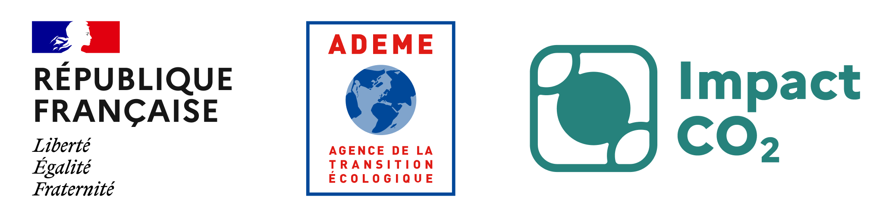
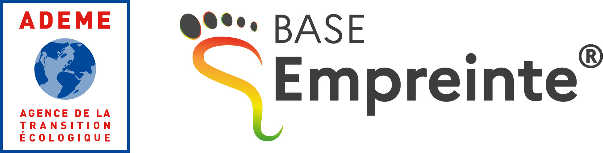

Hypothèses de calcul
Les données du Bilan Carbone N-1 de Niji sont utilisées dans cet outil pour tous les postes d'émissions du niveau 0, et pour le poste "Site Niji" des niveaux 1 & 2. Un ratio est a été appliqué sur ces données, afin d'obtenir les émissions par ETP et par jour ouvré.
Périmètre du calcul
L'impact carbone des livrables n'est pas pris en compte dans le calcul des émissions dans notre outil.
Seules les émissions des collaborateurs Niji localisés en France sont calculées. Il est prévu de prendre en compte les sites Marocains et Espagnols, lorsqu'ils seront intégrés dans le périmètre de calcul du Bilan Carbone de l'entreprise.
L'impact carbone du site client n'est pas comptabilisé dans l'outil. Ainsi, le résultat affiché par l'outil est allégé lorsque l'intégralité ou une partie de la prestation est réalisée chez le client.
L'outil ne prend pas en compte les émissions carbone des commerciaux, notamment générées lors des déplacements de suivi de projet
Les partenaires avec qui nous avons construit la solution

L'agence Déclic
Experte en carbone, l'agence a analysé les facteurs d'émissions choisis, les moyennes des données Niji et sur les calculs effectués à partir des données réelles du projet.

Impact CO2
Le calculateur utilise des outils d'Impact CO2, la start-up d'Etat au sein de l'ADEME qui facilite l'utilisation de la Base Empreinte et la communication du résultat.

Base Empreinte
Le calculateur utilise des outils d'Impact CO2, la start-up d'Etat au sein de l'ADEME qui facilite l'utilisation de la Base Empreinte et la communication du résultat.